Todo lo que necesitas para administrar la página por tu cuenta: textos, fotos, secciones, equipo, blog y más. Escrito para partir de cero: no hace falta saber nada de tecnología.
Versión 2 · Agosto 2026 · Revisado contra la pantalla real de Shopify
¿Qué quieres hacer hoy?
Ubica tu tarea y anda directo al capítulo. Este manual está pensado para consultarlo por tema, no para leerlo entero.
Entra con tu correo y contraseña. Si administras más de una tienda, elige Pewman Innovation.
Listo. Esa pantalla es el panel de administración: desde ahí se maneja todo el sitio y la tienda.
Guárdalo en favoritosVas a entrar seguido. Un marcador en el navegador te ahorra escribir la dirección cada vez.
El menú de la izquierda
Es tu mapa. Así se ve y esto es lo que usa cada parte:
Inicio
Pedidos
Productos
Clientes
Contenido
Metaobjetos
Archivos
Menús
Artículos del blog
Canales de ventas
Tienda online
Páginas
Configuración
Así se ve el menú lateral del panel
Algunas opciones (Metaobjetos, Archivos, Menús, Artículos del blog) aparecen al hacer clic sobre Contenido. Lo mismo con Tienda online, que muestra Páginas al seleccionarla.
Dibujo esquemático del panel real de Shopify (agosto 2026).
Dónde
Para qué sirve
Pedidos
Las compras que llegan. Quién compró, qué compró y a dónde enviarlo.
Productos
Crioprotect, Nanoforte y los que vengan. Precios, presentaciones, stock y fotos.
Clientes
La gente que ha comprado o dejado sus datos.
Contenido → Artículos del blog
Las noticias de prensa y los artículos técnicos.
Contenido → Archivos
Todas las fotos y PDF que usa el sitio.
Contenido → Menús
El menú superior del sitio y los enlaces del pie de página.
Tienda online
El diseño del sitio: el tema y el botón Editar tema. Es donde más vas a trabajar.
Tienda online → Páginas
Crear y administrar páginas: Nosotros, Casos, Contacto y las nuevas que hagas.
Configuración
Envíos, pagos, dominios y políticas. Se toca poco, y con cuidado.
Si el menú se ve distintoShopify actualiza su panel de vez en cuando y a veces mueve una opción de lugar. Si no encuentras algo, usa el buscador de arriba (la lupa, o ⌘ K): escribe lo que buscas, por ejemplo «archivos», y te lleva directo.
Cinco palabras y un concepto. Con esto entiendes todo el resto.
PáginaCada pantalla del sitio: Inicio, Nosotros, Casos, Contacto. Cada producto también tiene su página.
SecciónUn bloque grande dentro de una página: el carrusel del inicio, el equipo, los premios, el formulario. Se agregan, se ordenan y se quitan a gusto.
BloqueUna pieza dentro de una sección: cada persona del equipo es un bloque, cada logo es un bloque, cada pregunta frecuente es un bloque.
TemaEl diseño completo del sitio: colores, tipografías y el catálogo de secciones. El sitio usa un tema hecho a medida para Pewman.
ProductoLo que se vende. Tiene precio, presentaciones (1 L, 5 L, 20 L) y fotos.
El sitio completo está armado como piezas de Lego: páginas que contienen secciones, y secciones que contienen bloques. Tu trabajo como administrador es elegir piezas, ordenarlas y rellenarlas con textos y fotos. Nunca necesitas tocar código.
Todas las piezas de diseño del sitio parten con el nombre «Pewman ·» (Pewman · Equipo, Pewman · Premios, Pewman · Preguntas...). Cuando veas ese prefijo, es una sección diseñada especialmente para este sitio: puedes usarla con confianza en cualquier página. El capítulo 15 tiene el catálogo completo.
La herramienta principal. Funciona como un editor de arrastrar y soltar: eliges, escribes, mueves y guardas.
Cómo entrar
En el menú de la izquierda, haz clic en Tienda online.
Verás el tema del sitio con la etiqueta Activo. Haz clic en el botón negro Editar tema.
Se abre el editor: a la izquierda la lista de secciones, al centro la vista previa del sitio.
Pewman - sitioActivoPágina de inicio ▾🖥📱↩︎↪︎···Guardar
Header
Pewman · Header
⊕ Agregar sección
Plantilla
Pewman · Hero carrusel
Pewman · Premios
Pewman · Estadísticas
Pewman · Soluciones
⊕ Agregar sección
Footer
Pewman · Footer
Vista previa del sitio
Es el sitio de verdad, en vivo. Puedes hacer clic sobre cualquier texto o foto de la vista previa y se abre su panel de edición a la derecha.
Partes del editor: barra superior (página, vista celular, deshacer, Guardar), lista de secciones a la izquierda, vista previa al centro.
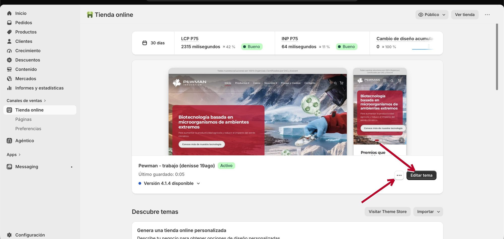
La pantalla Tienda online: el botón Editar tema abre el editor; el ··· tiene Duplicar y Cambiar nombre.
Moverte entre páginas
Arriba al centro hay un selector que dice Página de inicio. Haz clic y elige qué quieres editar:
Página de inicio: la portada del sitio.
Productos: las páginas de Crioprotect y Nanoforte.
Páginas: Nosotros, Casos, Contacto, Patentes y papers, Prensa y medios, y las que crees tú.
Blogs y Artículos del blog: el diseño de los listados y de las notas.
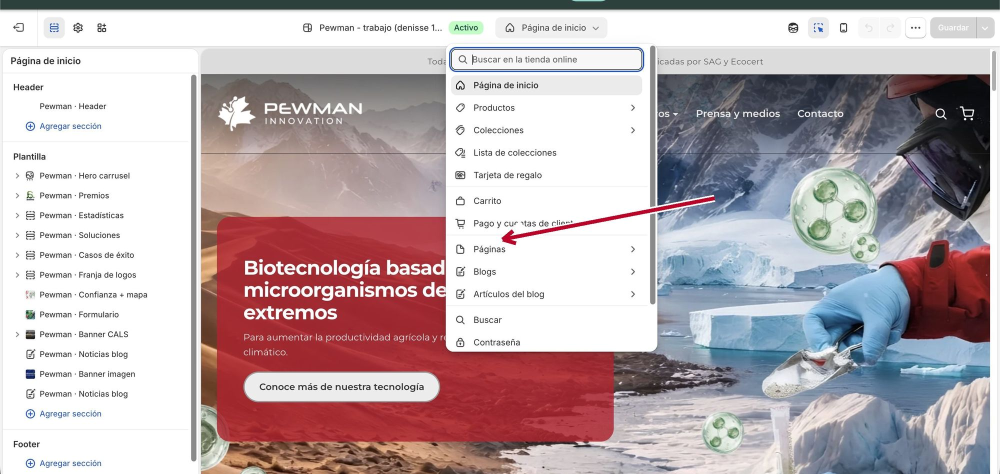
El selector de arriba abre esta lista: en Páginas están Nosotros, Casos, Contacto y las que crees tú.
Verás nombres cortos como «empresa» o «casos»Al abrir Páginas, el selector muestra la plantilla de cada página con su nombre interno: «empresa» es Nosotros, «casos» es Casos de éxito, «prensa» es Prensa y medios, «contacto» es Contacto. Aparece también una plantilla antigua «contact»: ignórala.
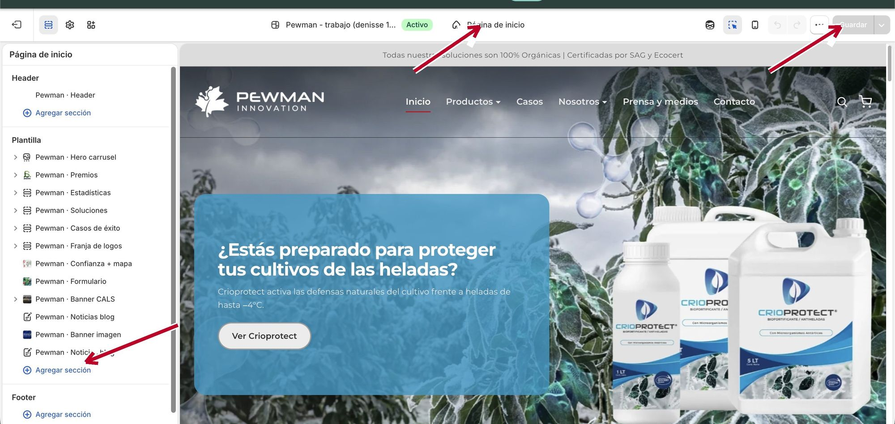
El editor: arriba el selector de página, a la izquierda ⊕ Agregar sección, arriba a la derecha Guardar.
Cambiar un texto
Elige la página donde está el texto.
Haz clic sobre el texto en la vista previa (o sobre su sección en la lista izquierda).
En el panel de la derecha aparecen los campos editables. Escribe el texto nuevo: la vista previa se actualiza al tiro.
Toca Guardar, arriba a la derecha.
Cambiar una foto
Haz clic en la sección que tiene la foto.
En el panel derecho, ubica el recuadro de la imagen y toca Cambiar.
Elige una imagen ya subida o sube una nueva desde tu computador.
Guarda.
Tamaños recomendadosEn el capítulo 11 hay una tabla con el tamaño ideal de foto para cada uso (fondos, personas, logos). Si una foto queda cortada, ahí está la solución.
Guardar: qué pasa exactamente
En el tema activo, Guardar publica de inmediatoMientras no toques Guardar, el sitio real sigue igual y puedes probar sin miedo (si te arrepientes, cierra la pestaña y no pasa nada). Pero al tocar Guardar, el cambio queda visible para todo el mundo al instante. Revisa la vista previa, y también en celular, antes de guardar.
Dentro del editor también tienes las flechas deshacer y rehacer (arriba a la derecha, junto al botón Guardar) para revertir los últimos cambios de la sesión.
Revisar cómo se ve en celular
Arriba a la derecha hay dos íconos: un computador y un teléfono.
Toca el teléfono: la vista previa cambia al formato de celular.
Revisa que los textos se lean y las fotos se vean bien. Después vuelve al ícono del computador.
Hazlo siempre antes de guardarLa mayoría de las visitas entra desde el teléfono. Diez segundos de revisión evitan sorpresas.
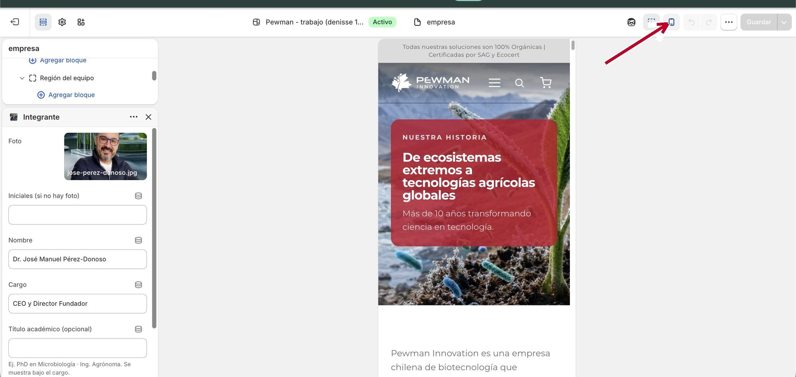
El ícono del teléfono muestra la página como en un celular; el del computador devuelve la vista normal.
Para cambios grandes: trabaja en una copia
Si vas a rediseñar una página completa o probar algo experimental, no lo hagas sobre el tema activo. Haz una copia y trabaja tranquilo:
Ve a Tienda online y en el tema activo toca el botón ··· (al lado de Editar tema).
Elige Duplicar. La copia aparece más abajo, en Temas en borrador.
Toca Editar tema en la copia y haz ahí todos los cambios. Nada de lo que hagas se ve en el sitio real.
Cuando esté listo y revisado, toca Publicar en esa copia: pasa a ser el sitio real.
Cuidado al publicar una copia antiguaAl publicar un borrador, se publica TODO tal como está en ese borrador. Si después de crear la copia alguien siguió editando el tema activo (textos, personas, noticias destacadas), esos cambios no están en la copia y se pierden de la vista al publicarla. Regla simple: crea la copia, haz el cambio y publícala pronto. No dejes borradores viejos dando vueltas.
El menú ··· del temaAhí también están Ver (vista previa sin editar), Cambiar nombre (útil para ponerle fecha a las copias, por ejemplo «Pewman - prueba equipo 25 ago») y Descargar archivo del tema (respaldo). Las opciones Editar código y Editar contenido predeterminado no las uses.
Las piezas grandes de cada página. Aquí está el corazón del sistema.
Agregar una sección
En el editor, elige la página donde quieres agregarla.
En la lista izquierda, toca ⊕ Agregar sección (dentro del grupo Plantilla).
Se abre el catálogo con un buscador. Escribe pewman y aparecen todas las secciones diseñadas para el sitio.
Pasa el mouse sobre cada nombre para ver una vista previa en miniatura. Haz clic en la que quieras.
La sección aparece en la página con contenido de ejemplo. Rellénala con tus textos y fotos.
Arrástrala a su posición y guarda.
🔍 Buscar secciones
SeccionesApps
Pewman · Artículo
Pewman · Banda CTA
Pewman · Banner imagen
Pewman · Beneficios
Pewman · Casos de éxito
Pewman · Certificaciones
... y todas las demás
Vista previa en miniatura
Al pasar el mouse por un nombre, aquí aparece cómo se ve la sección antes de agregarla.
El panel «Agregar sección»: buscador arriba, catálogo abajo, vista previa a la derecha.
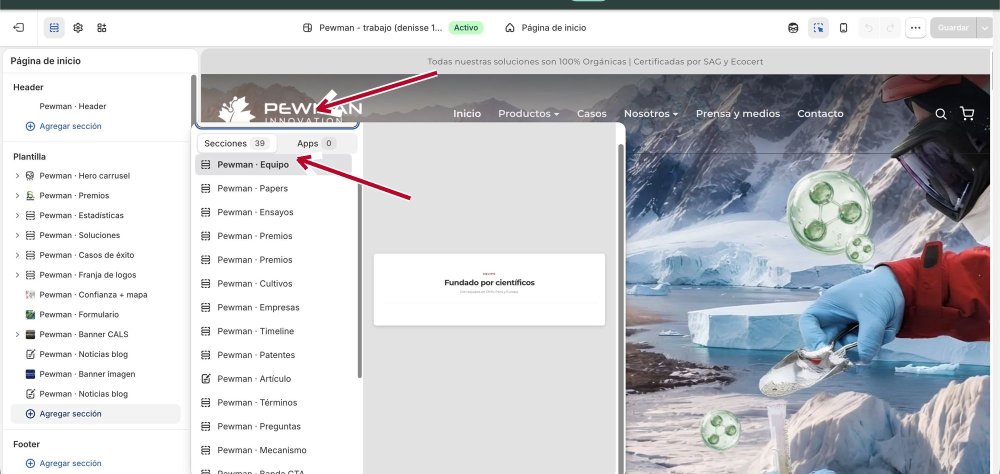
Escribe pewman en el buscador y aparece el catálogo completo, con vista previa al pasar el mouse.
Mover una sección
En la lista izquierda, toma la sección con el mouse y arrástrala hacia arriba o abajo. El orden de la lista es el orden de la página. Guarda al terminar.
Ocultar una sección (sin borrarla)
Pasa el mouse sobre la sección en la lista izquierda y toca el ícono del ojo. La sección desaparece del sitio pero queda guardada con todo su contenido. Para mostrarla de nuevo, toca el ojo otra vez.
Ante la duda, oculta en vez de borrarOcultar se deshace con un clic. Borrar significa rearmar la sección entera si te arrepientes.
Duplicar, copiar o renombrar una sección
Haz clic en la sección y abre el menú ··· en la parte alta del panel derecho. Ahí están:
Opción
Qué hace
Duplicar
Crea una copia idéntica justo debajo. Perfecto para repetir un diseño que ya te gusta y solo cambiarle el contenido.
Copiar
Copia la sección para pegarla en otra página (en la otra página: Agregar sección → pegar).
Cambiar nombre
Cambia cómo se llama en la lista izquierda (no cambia nada en el sitio). Útil si tienes dos secciones iguales: «Premios (arriba)» y «Premios (abajo)».
Ocultar
Lo mismo que el ícono del ojo.
Eliminar
Borra la sección y su contenido. Pide confirmación.
En ese menú también aparece «Editar código»No lo uses: abre el archivo técnico de la sección y un cambio accidental puede romperla. Todo lo editable ya está disponible en los campos del panel.
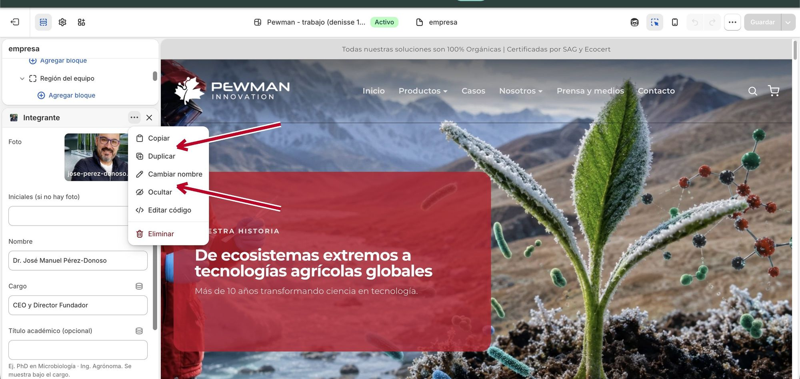
El menú ··· de secciones y bloques: Duplicar y Ocultar son tus aliados; «Editar código» no se toca.
Borrar una sección
Haz clic en la sección (lista izquierda o vista previa).
Abajo del panel derecho toca Eliminar sección (o usa el menú ··· → Eliminar).
Una persona, un logo, una pregunta, un slide: todos son bloques y todos se manejan igual.
Cuando una sección contiene elementos repetibles, en la lista izquierda aparece con una flechita ›. Al abrirla, ves sus bloques y el enlace ⊕ Agregar bloque.
Agregar: abre la sección con la flechita y toca ⊕ Agregar bloque. Si hay más de un tipo de bloque, elige cuál.
Editar: haz clic en el bloque y llena sus campos en el panel derecho.
Reordenar: arrastra el bloque dentro de la lista.
Ocultar: menú ··· del bloque → Ocultar (queda guardado, invisible).
Quitar: botón Eliminar bloque al final del panel del bloque.
Guarda al terminar.
Los bloques también se duplicanEl menú ··· de cada bloque tiene Copiar y Duplicar, igual que las secciones. Para agregar 3 preguntas frecuentes parecidas, escribe una y duplícala dos veces.
Algunas secciones tienen bloques dentro de bloquesEl equipo, por ejemplo: la sección contiene regiones, y cada región contiene integrantes. La línea de tiempo de Nosotros y los ensayos de Casos funcionan igual. Se navegan con las mismas flechitas.
Gente nueva, cambios de cargo, títulos académicos y países nuevos. Todo en la página Nosotros.
El equipo está agrupado por región (Chile, Perú, Europa) y dentro de cada región van las personas. Así se ve en el editor:
▾ Pewman · Equipo 🗑 👁
⊕ Agregar bloque
▾ Región del equipo (Chile)
⊕ Agregar bloque
👤 Integrante
👤 Integrante
👤 Integrante
› Región del equipo (Perú)
› Región del equipo (Europa)
Integrante
Foto · Iniciales (si no hay foto) · Nombre · Cargo · Título académico (opcional) · LinkedIn (opcional)
🗑 Eliminar bloque
La sección Equipo en la lista izquierda del editor, con el panel de un Integrante a la derecha.
Agregar una persona a una región que ya existe
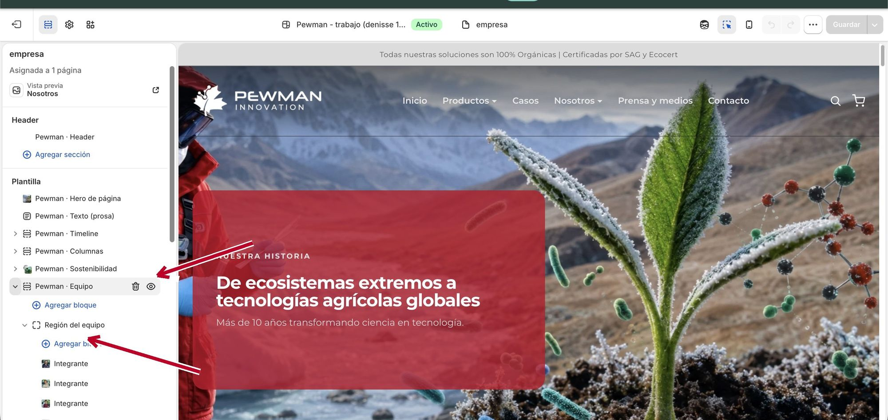
La sección Equipo abierta: cada región tiene su ⊕ Agregar bloque para sumar integrantes; el ojito oculta sin borrar.
Entra al editor (Tienda online → Editar tema) y elige la página Nosotros (en el selector de arriba: Páginas → empresa).
En la lista izquierda, abre Pewman · Equipo con la flechita.
Abre la región que corresponde (Chile, Perú o Europa).
Toca ⊕ Agregar bloque → Integrante.
Llena los campos: foto, nombre, cargo, título académico si tiene, y LinkedIn si tiene.
Arrastra el bloque si quieres cambiar su posición dentro de la región.
Guarda.
El título académico (PhD, Dr., Ing.)
Cada integrante tiene el campo Título académico (opcional). Lo que escribas ahí aparece bajo el cargo, en el color corporativo. Ejemplos: «PhD en Microbiología», «Ing. Agrónoma», «Bioquímico, MSc». Si la persona no tiene título que destacar, deja el campo vacío y no se muestra nada.
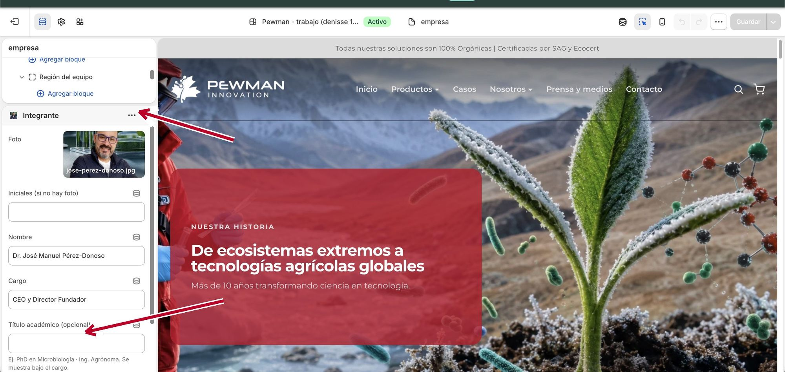
La ficha de un integrante: el campo Título académico y el ··· con Duplicar y Ocultar.
Cambiar el cargo o la foto de alguien
En la misma sección, haz clic sobre la persona (en la lista o directamente en la vista previa).
Edita el campo que necesites. Para la foto: toca la imagen → Cambiar.
Guarda.
Quitar a alguien
Haz clic en su bloque y toca Eliminar bloque al final del panel. Si la salida es temporal, mejor usa el menú ··· → Ocultar: la persona desaparece del sitio pero su ficha queda guardada.
Agregar un país nuevo
En Pewman · Equipo, toca el ⊕ Agregar bloque de la sección (el de arriba) y elige Región del equipo.
Escribe el nombre de la región, por ejemplo «México».
Abre la región nueva y agrega sus Integrantes igual que arriba.
Arrastra la región para ubicarla en el orden que quieras y guarda.
Las fotos del equipoUsa fotos cuadradas y parejas entre sí (todas de medio cuerpo o todas de rostro) para que la grilla se vea ordenada. Si alguien no tiene foto, escribe sus iniciales en el campo «Iniciales» y el sitio muestra un recuadro elegante con ellas.
Cuatro lugares del sitio muestran logos. Todos funcionan con la misma lógica de bloques.
Qué
Dónde está
Sección
Empresas que confían
Inicio
Pewman · Franja de logos
Premios (carrusel con destacado)
Inicio
Pewman · Premios
Premios y respaldo (con premio destacado grande)
Nosotros
Pewman · Premios
Certificaciones (SAG, Ecocert)
Páginas de producto
Pewman · Certificaciones
Agregar o quitar un logo (sirve para los cuatro casos)
Entra al editor y elige la página (Inicio, Nosotros o el producto).
Abre la sección correspondiente con su flechita. Verás un bloque por cada logo.
Para agregar: ⊕ Agregar bloque → Logo, sube la imagen y escribe el texto alternativo (el nombre de la empresa o premio).
Para quitar: clic en el logo → Eliminar bloque.
Para reordenar: arrastra los bloques.
Guarda.
Cambiar el premio destacado
Las dos secciones de premios tienen, además de los logos, campos propios en el panel de la sección:
En el Inicio: Título, Texto (el párrafo del reconocimiento) e Imagen destacada (el sello grande).
En Nosotros: Título, Subtítulo, y el premio destacado con su título, descripción e imagen.
Haz clic en la sección (no en un logo) y edita esos campos directamente.
Formato ideal de los logosPNG con fondo transparente o blanco, de al menos 400 px de ancho. Los logos con fondos de colores distintos se ven desordenados en la franja.
Esto no pasa por el editor visual: se publica desde el panel y aparece solo en el sitio.
El sitio tiene dos blogs y cada uno alimenta partes distintas:
Blog
Dónde aparece
Para qué
Prensa y medios
Página Prensa y medios + tarjetas «Prensa» del Inicio
Apariciones en medios, hitos, eventos
Artículos y papers
Página Patentes y papers + tarjetas «Artículos» del Inicio
Contenido técnico y científico propio
Publicar una entrada nueva
Ve a Contenido → Artículos del blog.
Toca Agregar artículo del blog (arriba a la derecha).
Escribe el título y el contenido.
En el panel derecho, en Organización → Blog, elige a cuál blog va: Prensa y medios o Artículos y papers. Este paso define dónde aparece.
En Autor puedes poner el medio («El Mercurio Campo») o el autor real del artículo.
Sube la imagen destacada: es la foto de la tarjeta en los listados.
Baja hasta Extracto y escribe 1 o 2 líneas de resumen (es lo que se lee en la tarjeta).
En Visibilidad elige Visible y guarda. Listo: aparece solo en el sitio.
Para escribirlo con calmaDéjalo en Oculto mientras lo redactas. Cuando esté listo, lo cambias a Visible y recién ahí sale al sitio.
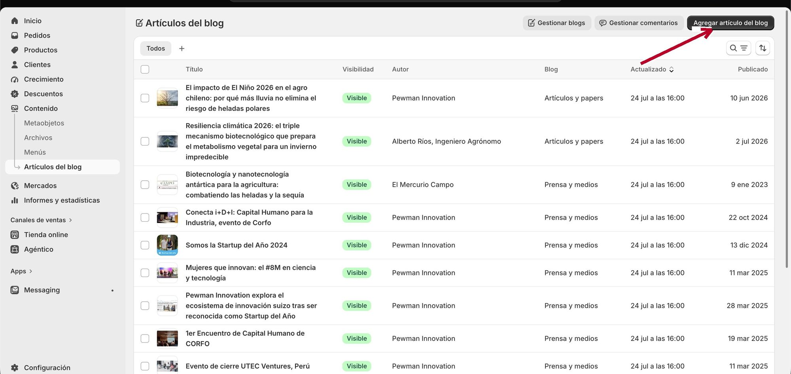
Contenido → Artículos del blog: el botón Agregar artículo del blog crea una entrada nueva.
La fecha de la entrada (importa mucho)
Las tarjetas de prensa muestran la fecha y el listado se ordena por fecha, de la más nueva a la más antigua. Shopify le pone a cada entrada la fecha del día en que la haces visible, pero puedes cambiarla:
Dentro de la entrada, mira el panel Visibilidad: bajo «Visible» aparece «A partir del [fecha]».
Toca el lápiz al lado de esa fecha.
Pon la fecha real de la publicación original (por ejemplo, el día en que salió la nota en el diario) y guarda.
Para qué sirveSi cargas hoy una nota que salió en marzo, ponle la fecha de marzo: así queda ordenada en su lugar correcto dentro del listado y la tarjeta muestra la fecha verdadera.
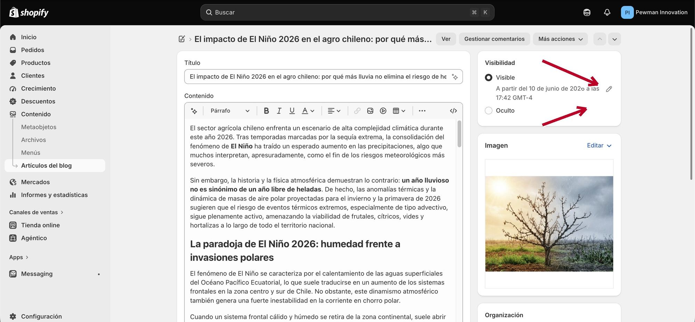
El lápiz junto a la fecha de Visibilidad cambia la fecha con que la entrada aparece y se ordena.
Editar o corregir una entrada
Ve a Contenido → Artículos del blog, haz clic en la entrada, corrige y guarda. Los cambios se reflejan de inmediato.
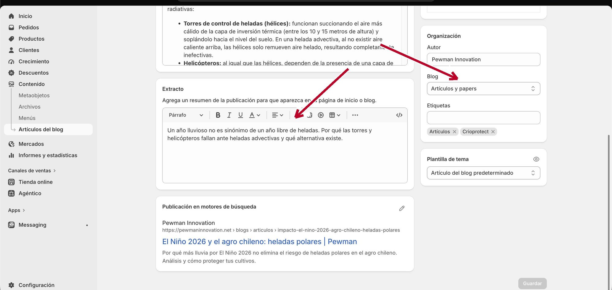
Más abajo en la misma pantalla: el Extracto (el resumen de la tarjeta) y el selector de Blog.
Sacar una entrada del sitio
Temporalmente: dentro de la entrada, cambia Visibilidad a Oculto. Desaparece del sitio pero queda guardada.
Para siempre: dentro de la entrada, al final, está la opción de eliminar. Piensa dos veces: no se puede recuperar.
Cuántas tarjetas se muestran en el Inicio
Las secciones «Prensa y medios» y «Artículos» del Inicio muestran las últimas entradas de cada blog (por defecto, 3). Para cambiar cuántas: editor → Inicio → clic en la sección → campo Cuántas mostrar. Ahí también puedes activar o desactivar que se muestre la fecha.
Una página de aterrizaje para una feria, una página por cultivo, lo que necesites. Son dos partes: crearla y diseñarla.
Parte A: crear la página
Ve a Tienda online → Páginas y toca Añadir página.
Escribe el título (será el nombre de la página y parte de su dirección web).
El campo Contenido puedes dejarlo vacío: el diseño lo armarás con secciones en el paso siguiente.
En Visibilidad déjala en Oculto mientras la construyes (así nadie la ve a medias).
En Plantilla deja «Página predeterminada».
Guarda.
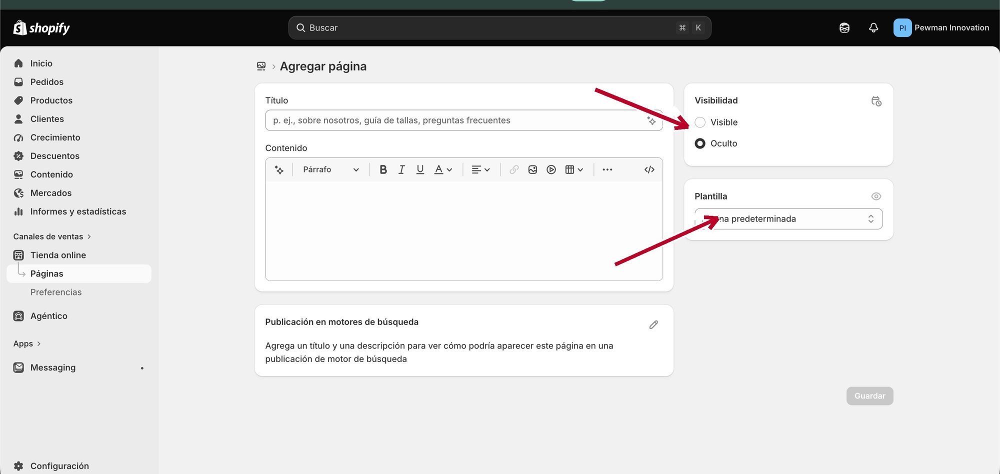
Agregar página: parte Oculta mientras la construyes y usa la Plantilla predeterminada.
Parte B: diseñarla con secciones
Entra al editor (Tienda online → Editar tema).
En el selector de arriba elige Páginas y busca tu página nueva.
Toca ⊕ Agregar sección, escribe pewman y arma la página pieza por pieza. Una receta que funciona casi siempre:
Pewman · Hero de página como encabezado (título grande, con o sin foto de fondo).
Pewman · Imagen + texto para contar lo principal (una o varias, alternando la imagen a izquierda y derecha).
Pewman · Preguntas si hay dudas típicas que responder.
Pewman · Banda CTA al final, con botón a WhatsApp o Contacto.
Guarda.
Cuando esté lista: vuelve a Tienda online → Páginas, abre la página y cambia Visibilidad a Visible.
Si corresponde, agrégala al menú del sitio (capítulo 12).
Título y dirección webSi la página se llama «Cultivos de cerezo», su dirección será pewmaninnovation.net/pages/cultivos-de-cerezo. Puedes ajustar esa dirección al final de la ficha de la página, en «Publicación en motores de búsqueda» → Editar.
Una plantilla por página cuando el diseño es distintoSi en el editor eliges tu página nueva y ves que comparte plantilla con otra («Se ha asignado a 2 páginas»), los cambios de diseño afectarían a ambas. Para darle diseño propio: en la ficha de la página (Tienda online → Páginas), en el panel Plantilla, crea una plantilla nueva. Si ese paso te complica, pide apoyo la primera vez.
Los cambios más pedidos, uno por uno. Todos parten igual: editor → elegir la página → clic en la sección.
El carrusel del Inicio (hero)
Sección Pewman · Hero carrusel en la Página de inicio. Cada lámina es un bloque Slide con: foto de fondo, titular, texto, color del recuadro y hasta dos botones.
Cambiar una foto o texto: abre la sección → clic en el slide → edita.
Velocidad: en el panel de la sección puedes prender o apagar el paso automático y elegir cada cuántos segundos avanza.
Los encabezados de las demás páginas
Cada página interior parte con Pewman · Hero de página: título, texto, foto de fondo opcional, color del recuadro y la miga de pan (Inicio › Nosotros). Todo editable en el panel de la sección.
Los contadores del Inicio (+5000 hectáreas...)
Sección Pewman · Estadísticas. Cada número es un bloque con: valor (solo el número), prefijo (+), sufijo (%) y descripción. Cambia el valor y guarda; la animación de conteo es automática.
Casos de éxito, testimonios y ensayos
Carrusel de casos (Inicio): sección Pewman · Casos de éxito; cada cultivo es un bloque con foto, etiqueta y enlace.
Testimonios en video (Casos): sección Pewman · Testimonios; cada testimonio es un bloque con el video y los datos del productor.
Ensayos documentados (Casos): sección Pewman · Ensayos; está agrupada por categorías y cada ensayo es un bloque con foto, cultivo, ubicación, descripción y su informe PDF opcional (el enlace del PDF se obtiene como explica el capítulo 11).
Papers y patentes (página Patentes y papers)
Papers: la sección puede leer el blog «Artículos y papers» automáticamente (recomendado: publicas en el blog y aparece solo), o mostrar tarjetas fijas por bloque. Cada tarjeta fija acepta un enlace al paper (DOI, revista o PDF): si lo cargas, la tarjeta se vuelve clickeable.
Patentes: cada patente es un bloque con jurisdicción, número de registro, descripción y país (define la banderita).
Sostenibilidad (página Nosotros)
Sección Pewman · Sostenibilidad. Tiene varias partes, todas editables:
Pilares: cada pilar es un bloque con ícono, cifra opcional, título y texto. Además del set de íconos incluido, cada pilar acepta una imagen propia como ícono: útil para logos de los ODS u otros sellos.
Documentos descargables: cada documento es un bloque con título, enlace al PDF y una línea de detalle («PDF · 26 págs»).
Banner y política: campos de la sección (foto, títulos y el párrafo largo).
Piezas para armar páginas: Imagen + texto, Preguntas, Banda CTA
Pewman · Imagen + texto: la pieza más versátil. Foto a un lado, texto al otro, botón opcional. Elige el lado de la imagen, el fondo crema y los espacios. En celular la imagen siempre queda arriba.
Pewman · Preguntas: preguntas frecuentes en acordeón. Cada pregunta es un bloque (pregunta + respuesta). Además ayuda a que Google muestre el sitio con preguntas destacadas.
Pewman · Banda CTA: franja de cierre con título, texto y hasta dos botones. Acepta foto de fondo y un control para oscurecerla más o menos (si el texto no se lee, sube el oscurecido).
Pewman · Texto (prosa): un bloque de texto con formato, para párrafos largos.
Pewman · Banner imagen: una imagen ancha, opcionalmente clickeable (como el banner azul «Origen chileno, alcance global» del Inicio).
El banner de CALS (distribuidor)
Sección Pewman · Banner CALS en el Inicio. Cada zona del país es un bloque con sus sucursales y su enlace. En el panel de la sección hay un interruptor para que el banner pida los datos del visitante antes de derivarlo a CALS (recomendado: los contactos quedan registrados) o lo lleve directo.
La guía descargable de cada producto
En las páginas de producto, sección Pewman · Guía gated: el visitante deja sus datos y descarga la guía de aplicación.
La portada que se ve: campo «Imagen de portada» en el panel de la sección (sube la portada real del PDF, en vertical).
El PDF que se descarga: vive en la ficha del producto, campo «PDF guía de aplicación» (capítulo 13). Para actualizar la guía: sube el PDF nuevo ahí y cambia también la portada si corresponde.
Mecanismos de acción (páginas de producto)
Sección Pewman · Mecanismo: hasta 3 pasos (Biológico, Físico, Sistémico), cada uno con título, descripción y un esquema opcional (imagen). La sección tiene además foto de fondo con controles de encuadre y oscurecido.
Dónde viven las imágenes y los PDF, y cómo obtener el enlace de cualquiera.
Subir un archivo
Ve a Contenido → Archivos.
Toca Subir archivos y elige la foto o el PDF.
Cuando termine de subir, aparece en la lista con su fecha y tamaño.
Copiar el enlace de un archivo
En la lista de Archivos, a la derecha de cada archivo hay un ícono de enlace: haz clic y queda copiado. Ese enlace sirve para pegarlo donde una sección pida «URL del PDF» (ensayos, documentos de sostenibilidad, papers).
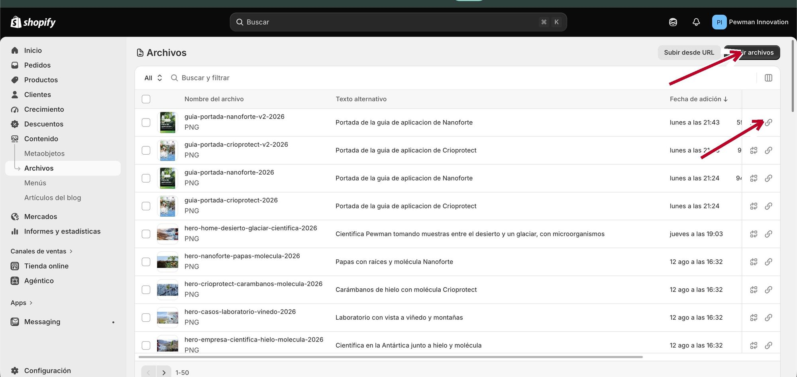
Contenido → Archivos: Subir archivos arriba a la derecha y, en cada fila, el ícono de enlace para copiar su URL.
Tamaños recomendados
Uso
Tamaño ideal
Formato
Fotos de fondo (heros, banners)
2000 px de ancho o más, horizontal
JPG
Fotos del equipo
800 × 800 px, cuadrada
JPG
Logos (empresas, premios)
400 px de ancho o más
PNG fondo transparente
Portadas de guías
700 × 1000 px, vertical
PNG o JPG
Fotos de casos y tarjetas
1200 px de ancho
JPG
Esquemas y diagramas
1200 px de ancho, fondo blanco o transparente
PNG
Nombra bien los archivos antes de subirlos«ensayo-cerezos-curico-2026.pdf» se encuentra en un segundo. «documento1.pdf» no. Usa minúsculas y guiones, sin tildes ni espacios.
El texto alternativo de las imágenesAl hacer clic en una imagen en Archivos puedes agregarle un «texto alternativo»: una frase que describe la foto. Ayuda al posicionamiento en Google y a las personas que navegan con lector de pantalla. Dos minutos bien invertidos.
No borres archivos que estén en usoLa columna Referencias muestra dónde se usa cada archivo. Si borras uno con referencias, en el sitio queda un hueco donde estaba esa imagen. Ante la duda, no borres: los archivos no estorban.
Los enlaces de arriba y de abajo del sitio se administran en un solo lugar.
Ve a Contenido → Menús. Ahí viven:
Menú
Qué controla
Main menu
El menú superior del sitio: Inicio, Productos, Casos, Nosotros, Prensa y medios, Contacto.
Pewman Footer Productos
La columna «Productos» del pie de página.
Pewman Footer Empresa
La columna «Empresa» del pie de página.
Footer menu · Customer account main menu
Menús técnicos de Shopify. No los toques.
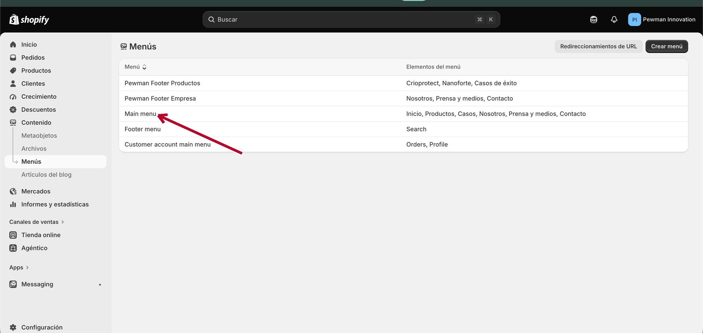
Contenido → Menús: Main menu es el menú superior; los dos «Pewman Footer» son las columnas del pie.
Agregar un enlace al menú
Entra al menú (por ejemplo, Main menu).
Toca Agregar elemento de menú.
Escribe el nombre visible y elige el destino: empieza a escribir y Shopify te sugiere páginas, productos y blogs. También puedes pegar una dirección.
Arrastra los elementos para ordenarlos. Para crear un submenú (como el de Productos), arrastra un elemento un nivel hacia adentro, debajo de su padre.
Toca Guardar menú.
Quitar o renombrarCada elemento del menú tiene su lápiz (editar) y su basurero (quitar). Quitar un enlace del menú no borra la página: solo deja de aparecer en el menú.
Cambiar un precio toma menos de un minuto. Crear un producto nuevo, un rato más.
Cambiar un precio
Ve a Productos y entra al producto.
Baja hasta Variantes: ahí están 1 L, 5 L y 20 L.
Haz clic en la variante, escribe el precio nuevo y guarda.
Los precios ya incluyen IVALa tienda está configurada así: si pones $50.000, el cliente paga $50.000 con IVA incluido. No lo sumes aparte.
Stock
Hoy los productos se venden sin control de inventario: nunca aparecen agotados. Si en algún momento quieren mostrar «Agotado» o llevar inventario real, eso se activa en la ficha del producto, variante por variante. Pide apoyo la primera vez.
La ficha extendida del producto (los campos especiales)
Dentro de cada producto, al final de la ficha, hay una lista de metacampos. Cada uno alimenta una parte de la página del producto:
Campo
Qué aparece en la página
Titular del hero
La frase grande de la portada del producto
Imagen del hero
La foto de fondo de esa portada
Copy de la caja de compra
Los puntos al lado del botón de compra
Cultivos compatibles
La lista de cultivos donde se aplica
Certificaciones
Los sellos (SAG, Ecocert)
PDF guía de aplicación
El archivo que se descarga tras llenar el formulario de la guía
Los campos que dejes vacíos simplemente no se muestran y la página se ve bien igual.
Crear un producto nuevo
Se hace una sola vez por producto y la página se arma sola con lo que cargues:
Crear:Productos → Agregar producto. Título, descripción, fotos (la primera es la principal).
Variantes: crea las presentaciones (1 L, 5 L, 20 L) con su precio. En cada una escribe el peso en kilos: es obligatorio para calcular el envío.
Campos especiales: llena los metacampos de la tabla de arriba (los que tengas).
Beneficios y mecanismo: estos dos van en el editor visual, no en la ficha. Editor → selector de arriba → Productos → tu producto → llena las secciones Pewman · Beneficios (ícono + texto por beneficio) y Pewman · Mecanismo (hasta 3 pasos). Mientras estén vacías, esas secciones no se muestran y la página no se ve rota.
Mostrarlo en el Inicio: editor → Página de inicio → sección Pewman · Soluciones → ⊕ Agregar bloque → Tarjeta de producto → elige el producto, sube su logo y escribe sus beneficios resumidos.
Agregarlo al menú:Contenido → Menús → Main menu → Agregar elemento (capítulo 12).
Nunca borres un productoSi deja de venderse, archívalo (dentro del producto, al final: Archivar). Borrar pierde el historial de ventas y rompe los enlaces que ya circulan. Archivar es reversible; borrar no.
Cuando entra una compra te llega un correo y el pedido aparece en Pedidos.
Preparar un envío
Entra al pedido haciendo clic sobre él.
Revisa qué compró y la dirección de despacho.
Prepara el paquete.
Cuando lo despaches, entra otra vez al pedido y toca Preparar pedido.
Escribe el número de seguimiento de Blue Express y guarda.
El correo al cliente es automáticoAl guardar el número de seguimiento, el cliente recibe un correo con su tracking. No tienes que escribirle tú.
El formato de 20 litros va aparteEl bidón de 20 L no se despacha por courier: se coordina directo con el cliente. Si aparece un pedido con ese formato, contáctalo para acordar la entrega.
Las 36 piezas «Pewman ·» disponibles en Agregar sección, agrupadas por lo que hacen. Las etiquetas indican qué bloques acepta cada una.
Portadas y encabezados
Pewman · Hero carrusel
El carrusel grande del Inicio. Foto, titular, recuadro de color y botones por lámina.
agrega y quita: slide
Pewman · Hero de página
Encabezado de página interior, con o sin foto de fondo y miga de pan.
campos propios
Pewman · Hero de producto
Portada de una página de producto. Toma foto y color desde la ficha del producto.
campos propios
Contenido para armar páginas
Pewman · Imagen + texto
Foto a un lado, texto al otro, botón opcional. La pieza más versátil.
campos propios
Pewman · Preguntas
Preguntas frecuentes en acordeón.
agrega y quita: pregunta
Pewman · Texto (prosa)
Un bloque de texto con formato, sin imagen.
campos propios
Pewman · Columnas
Dos o más tarjetas de título + texto (propósito y visión).
agrega y quita: tarjeta
Pewman · Banner imagen
Una imagen ancha, opcionalmente clickeable.
campos propios
Pewman · Banda CTA
Franja de llamado a la acción con hasta dos botones y foto de fondo regulable.
campos propios
Empresa y equipo
Pewman · Equipo
El equipo por regiones. Cada persona con foto, cargo, título académico y LinkedIn.
regionesintegrantes
Pewman · Timeline
La historia de la empresa por hitos, con foto y chips de países.
agrega y quita: hito
Pewman · Sostenibilidad
Banner, política, pilares con ícono (o imagen propia, ideal ODS) y documentos descargables.
pilaresdocumentos
Prueba social y respaldo
Pewman · Premios (Inicio)
Texto del reconocimiento + sello destacado + carrusel de logos.
agrega y quita: logo
Pewman · Premios (Nosotros)
Premio destacado grande + grilla de logos.
agrega y quita: logo
Pewman · Franja de logos
Empresas que confían en nosotros.
agrega y quita: logo
Pewman · Estadísticas
Contadores animados (+5000 hectáreas...).
agrega y quita: estadística
Pewman · Casos de éxito
Carrusel de casos por cultivo.
agrega y quita: caso
Pewman · Testimonios
Testimonios en video de productores.
agrega y quita: testimonio
Pewman · Ensayos
Ensayos de campo por categoría, con informe PDF opcional.
categoríasensayos
Pewman · Papers
Artículos técnicos: lee el blog automáticamente o tarjetas fijas con enlace.
agrega y quita: paper
Pewman · Patentes
Patentes por país con número de registro.
agrega y quita: patente
Pewman · Certificaciones
Sellos y certificaciones del producto.
agrega y quita: sello
Pewman · Confianza + mapa
Mapa de presencia + texto de confianza.
campos propios
Pewman · Resultados
Resultado destacado con foto al lado (temporadas, cifras).
campos propios
Producto
Pewman · Beneficios
Hasta 6 beneficios con ícono (o imagen propia).
agrega y quita: beneficio
Pewman · Ficha producto
La caja de compra: formatos, precio y botón.
campos propios
Pewman · Mecanismo
Los mecanismos de acción, cada uno con su esquema opcional.
agrega y quita: paso
Pewman · Cultivos
Listado de cultivos donde se aplica.
campos propios
Pewman · Soluciones
Tarjetas de los productos con sus beneficios (Inicio).
agrega y quita: tarjeta
Pewman · Guía gated
Descarga de la guía a cambio de los datos del visitante.
campos propios
Conversión y noticias
Pewman · Formulario
Formulario de contacto sobre foto de fondo.
campos propios
Pewman · Contacto full
Página de contacto completa: datos + formulario.
campos propios
Pewman · Banner CALS
Banner del distribuidor con selector de zona y formulario opcional.
agrega y quita: zona
Pewman · Noticias blog
Últimas entradas de un blog, con fecha opcional.
campos propios
Pewman · Prensa (home)
Grilla de noticias cargadas a mano (alternativa al blog).
agrega y quita: noticia
Pewman · Lista de blog
El listado completo de un blog (página Prensa y medios).
campos propios
Pewman · Artículo
El cuerpo de una nota del blog.
campos propios
Pewman · Términos
Texto legal por capítulos.
agrega y quita: sección legal
Header y FooterEl encabezado del sitio (menú superior) y el pie de página también son secciones (Pewman · Header y Pewman · Footer), pero fijas: están en todas las páginas y no se agregan ni se quitan. Sus textos y enlaces se editan haciendo clic en ellas dentro del editor, y sus menús en Contenido → Menús.
Si todavía no guardaste: usa la flecha deshacer (arriba a la derecha) o cierra la pestaña sin guardar.
Si ya guardaste: vuelve a entrar y corrige a mano, o pide apoyo para restaurar una versión anterior del tema.
«No veo mi cambio en el sitio»
Confirma que tocaste Guardar en el editor.
Recarga el sitio con ⌘ Shift R (Mac) o Ctrl Shift R (Windows): fuerza la recarga sin memoria del navegador.
Si sigue igual, espera 2 o 3 minutos: el sitio guarda copias temporales que se renuevan solas.
Confirma que editaste el tema Activo y no una copia en borrador (mira la etiqueta en la barra del editor).
«Borré una sección sin querer»
Si no has guardado: deshacer (flecha arriba a la derecha) y listo. Si guardaste: la sección hay que rearmarla, pero el capítulo 15 te dice qué sección era y sus campos, y las fotos siguen en Contenido → Archivos. Para la próxima: ocultar en vez de borrar.
«Subí una foto y se ve cortada»
Las fotos se recortan automáticamente para calzar en su espacio. Soluciones:
Usa el tamaño recomendado para ese uso (tabla del capítulo 11).
Varias secciones tienen un control de encuadre para mover el foco de la foto hacia arriba o abajo.
Suele pasar al pegar texto desde Word. Pega sin formato: ⌘ Shift V (Mac) o Ctrl Shift V (Windows), y aplica negritas desde la barra del editor.
«No encuentro una sección en Agregar sección»
Escribe pewman en el buscador del panel: aparecen todas.
Revisa que estés en la pestaña Secciones (no en Apps).
Hay dos secciones llamadas «Pewman · Premios» (la del Inicio y la de Nosotros). Pasa el mouse para ver la vista previa y distinguirlas.
«Estoy editando otra página sin darme cuenta»
Mira el selector de arriba al centro: dice exactamente qué página estás editando. Los cambios de una plantilla compartida afectan a todas las páginas que la usan (capítulo 9).
«Alguien llenó un formulario y no me llegó»
Los formularios dejan cada contacto registrado en el sistema de contactos de la empresa. Revisa también la carpeta de spam del correo. Si no aparece en ninguna parte, avisa: puede ser un problema de configuración.
«El sitio está caído» o algo dejó de funcionar solo
No intentes arreglarlo a la fuerza. Si el problema es de pagos, envíos, dominio o algo que nadie tocó, avisa al soporte técnico de confianza y se revisa. Anota qué estabas haciendo cuando pasó: acelera el diagnóstico.
¿Puedo romper el sitio por hacer clic donde no era?
Es difícil. Mientras no toques Guardar, nada cambia. Y las zonas realmente delicadas (pagos, envíos, dominio, código) están listadas en el capítulo 16: si no entras ahí, el resto es terreno seguro.
¿Los cambios se publican solos?
En el editor del tema activo: sí, al tocar Guardar quedan en vivo. En el blog y las páginas: al ponerlas en Visible. Nada se publica sin que tú lo confirmes con uno de esos dos gestos.
¿Cuántas personas pueden administrar el sitio?
Las que quieran: cada una debe tener su propio usuario de Shopify (Configuración → Usuarios). No compartan una misma clave.
¿Puedo programar una noticia para que salga en una fecha?
Sí. En la entrada del blog, en Visibilidad, toca el lápiz de la fecha y elige un día futuro: se publica sola ese día.
¿Cómo agrego un video?
La sección de testimonios acepta videos directamente. Para videos en otras partes, lo más simple es subirlos a YouTube y pegar el enlace donde la sección lo permita, o pedir apoyo para incrustarlo.
¿El sitio funciona en inglés?
Hoy el sitio es en español. Traducirlo es un proyecto aparte (Shopify lo soporta), no un ajuste del día a día.
¿Dónde veo cuánta gente visita el sitio?
En Informes y estadísticas del panel: visitas, ventas, productos más vistos y de dónde llega la gente.
¿Qué pasa si dos personas editan al mismo tiempo?
Gana el último que guarda, y puede pisar al otro sin aviso. Coordinen: una persona a la vez en el editor.
¿Cada cuánto conviene revisar el sitio?
Una vuelta rápida al mes: probar el formulario, mirar la página en celular, revisar que los precios estén al día y que las noticias nuevas estén cargadas.